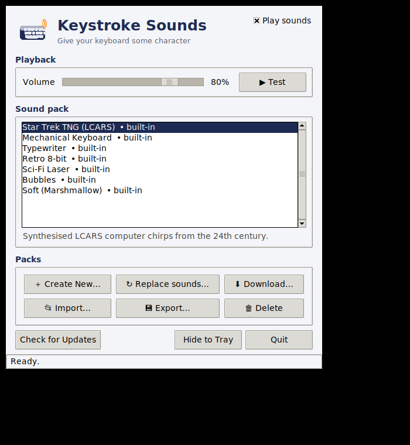

Make your keyboard sound like the bridge of the Enterprise — or a clacky mechanical board, or an old typewriter. A different sound for every key, system-wide, tucked into your Windows tray.

Letters spread across a sample pool, with distinct sounds for Space, Enter, Backspace, Tab and modifiers — so typing actually sounds good, not like one key on repeat.
Close or minimise and it tucks into the Windows taskbar arrow, playing quietly in the background across every app.
Build your own packs from any audio, swap sounds per key, or load a set from a link — your custom packs survive updates.
One-click updates, plus a growing library of downloadable sound packs right inside the app.
Download the installer for free, then buy a license to unlock it. Secure checkout with card or PayPal — your key arrives by email instantly.
After buying: install, open the app, click License, and paste your key to activate.
Questions, bug reports or feedback? Send a message below — it opens a public support ticket on GitHub that we follow and reply to.